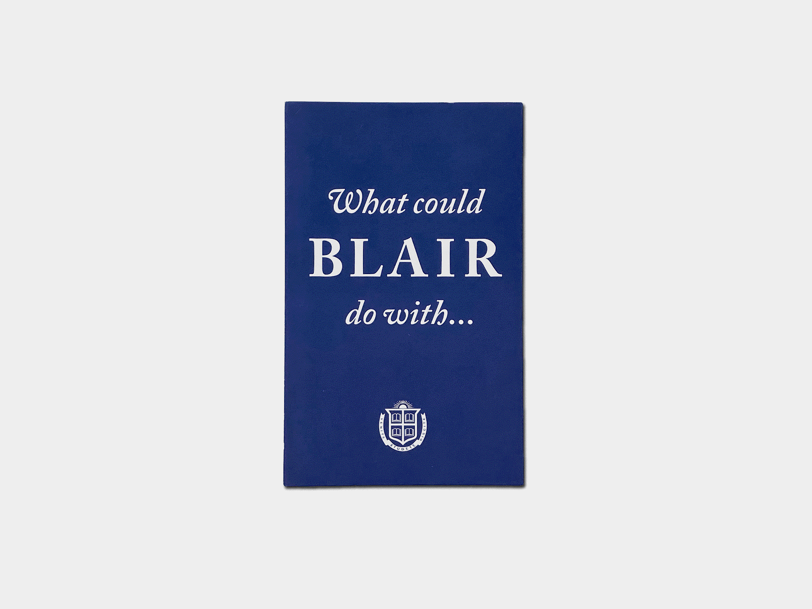

Freelance Work
Blair Academy, a long-standing institution located in northwestern New Jersey, commissioned me to design a reading experience for its Fall 2021 Fundraising Brochure.


After Blair's marketing team sent me project assets, I suggested that we format the brochure into an accordion fold. The reason being, an accordion fold allows the reader to choose between browsing the donations page-by-page ( as a booklet ) or all at once ( laid-flat ). Blair's marketing team was satisfied with the idea, and I went to work on the page layout.


My strategy was to communicate the sophistication of Blair Academy's brand identity through simplicity. I used a clean, two-color pallete, set the text into a clear heirarchy, and kept unecessary graphic elements to a minimum. The project was finished within three weeks.